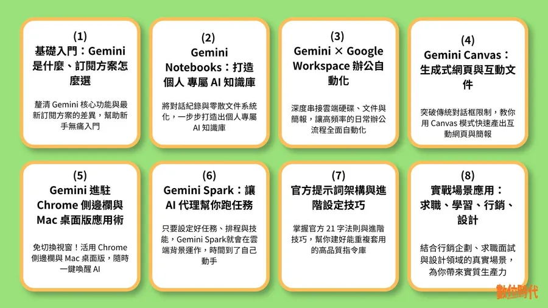

數位時代｜Gemini 學習地圖：39 篇 Notebooks、Spark、Workspace 實測教學

一句話摘要
《數位時代》整理 39 篇 Gemini 實戰教學，將 Gemini 從聊天工具、個人知識庫、Google Workspace 辦公自動化、Canvas 生成式創作，到 Spark 個人 AI 代理與提示詞架構，整理成可跳讀的學習地圖。
為什麼保存
這篇是 Gemini 系列教學索引型文章，適合當作「Google AI 工具學習入口」。對欒帥的 AI 學習雷達來說，它不是單一技巧，而是可延伸成課程、工作坊、企業導入或個人 AI 工作流設計的總目錄。
原文定位
- 主題：Gemini 完整教學地圖
- 規模：39 篇 Gemini 實測文章
- 核心工具：Gemini、Gemini Notebooks、Google Workspace、Gemini Canvas、Chrome 側邊欄、Mac 桌面版、Gemini Spark
- 建議讀法：不用一次讀完，先理解方案，再按工作場景跳讀
八大學習區塊
| 區塊 | 重點 | 適合誰先看 |
|---|---|---|
| 方案選擇 | 先搞懂 Gemini 方案、功能差異與使用定位 | 剛開始導入 Gemini 的使用者 |
| Gemini Notebooks | 建立個人專屬 AI 知識庫，整理對話與文件 | 想做知識管理、研究、市調的人 |
| Google Workspace | Slides、Sheets、Docs、Gmail、Calendar 與 Drive 整合 | 常做簡報、表格、文件與信件的人 |
| Gemini Canvas | 生成式網頁、互動文件、視覺化儀表板 | 想快速做展示頁、互動內容的人 |
| Chrome / Mac | Chrome 側邊欄、跨分頁任務、Mac App 快捷叫用 | 重度瀏覽器或 Mac 使用者 |
| Gemini Spark | 任務、排程、技能與雲端背景執行 | 想理解 Google 個人 AI 代理的人 |
| 提示詞架構 | Google 官方提示詞指南、進階寫法與行銷提示詞 | 想建立可重用指令庫的人 |
| 實戰場景 | 求職、學習、行銷、設計與 Deep Research | 想把 Gemini 套進具體工作流的人 |
對欒帥的應用價值
- 可以整理成「Gemini 入門到進階」課程路線。
- 可對照 Claude、NotebookLM、ChatGPT 的學習地圖，做跨模型能力比較。
- 可拆成企業培訓單元：知識庫、Workspace 自動化、提示詞、AI Agent。
- Gemini Spark 的任務／排程／技能概念，可和 Hermes Agent、n8n、Claude Skills 做比較。
- Gemini Notebooks 可作為 NotebookLM、Notion、Obsidian 之外的個人知識庫選項。
建議閱讀順序
- 先看方案選擇，確認是否需要 Gemini 付費版或 Workspace 整合。
- 想做知識管理：從 Notebooks 章節開始。
- 想提升日常辦公：直接看 Google Workspace 章節。
- 想做原型與互動頁：看 Canvas 章節。
- 想做自動化代理：看 Gemini Spark。
- 最後補官方提示詞架構，沉澱成可重用指令庫。
後續補完方向
- 建立 Gemini、Claude、ChatGPT、NotebookLM 四套工具的學習地圖比較表。
- 把 39 篇文章拆成「初學者」、「知識工作者」、「教師」、「行銷」、「企業導入」五條路線。
- 追蹤 Gemini Spark 是否能穩定支援排程任務、外部工具與長期記憶。
- 將 Google Workspace 相關教學轉成實作工作坊範本。